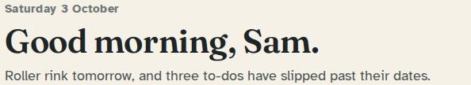
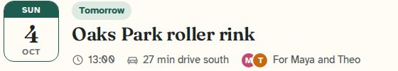
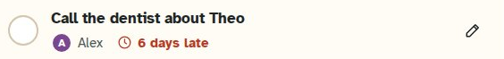
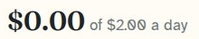
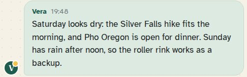
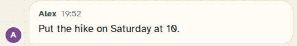

Specimen
Type
Three faces the family already knew, and one small mono that lives only on the glass. The sizes, weights and line heights are the ones the family chose in A1, with a few changes, each fixing a named problem.
The faces
- FrauncesHeadings and the wordmark. Weight 600. The page title alone uses the soft axis at full, which rounds the terminals; every other heading is as chosen.
- Atkinson HyperlegibleEverything the family reads and writes. 400 and 700, 17 px body. Its zero is slashed, which helps in running text.
- Fraunces Figures 0123456789Numbers that stand alone, and every amount and clock time: dates in tiles, prices, counts, and “$2.00” or “7:48 pm” inside a sentence. Fraunces digits with an open zero, so a price never reads as $Ø.ØØ.
- JetBrains MonoOnly on the glass: the status pill when something needs noticing, and the lines inside a pane. 14 px, one weight. The radar’s labels are Atkinson, so a kid can read them. Never on paper, so never on a heading, a receipt, a time, or anything the family reads in a list.
The scale
Each step, largest first. Sizes are in CSS pixels at the default text size; they grow with the reader’s setting.
| Step and where it’s used | Sample | Face, size, weight, line height |
|---|---|---|
| WordmarkThe bar and the sidebar, always beside the mark, with the lit cursor | FamilyDB | Fraunces, soft22 px · 20 on the phone bar · weight 600 · line 1 |
| Page titleOne per page. The only heading that uses the soft cut | Good morning, Sam. | Fraunces, soft42 px · 32 on the phone · weight 600 · line 1.1 |
| Next-plan titleHome’s “Next up”, the one plan that matters most | Oaks Park roller rink | Fraunces26 px · 22 on the phone · weight 600 · line 1.25 |
| Section titleCard titles, section heads, sheet sections | To do | Fraunces23 px · weight 600 · line 1.2 |
| Small titleIdea cards, small panels, Ask Vera on the phone | Lava tubes at Ape Cave | Fraunces19 px · weight 600 · line 1.25 |
| LedeThe one line under a page title | Roller rink tomorrow, and three to-dos are late. | Atkinson Hyperlegible18 px · 16 on the phone · weight 400 · line 1.5 |
| To-do titleTo-do rows | Call the dentist about Theo | Atkinson Hyperlegible18 px · 17 on Home · weight 700 · line 1.25 |
| Row titleList rows, idea titles on every page, buttons, names on cards | Mount St. Helens day trip | Atkinson Hyperlegible17 px · weight 700 · line 1.25 |
| BodyEverything people read: messages, notes, help | Saturday is dry until about 3 pm; Sunday has rain after noon. | Atkinson Hyperlegible17 px · weight 400 · line 1.5 |
| Page eyebrowThe date or kind over a page title | Saturday 3 October | Atkinson Hyperlegible15 px, +0.02em · weight 700 · line 1.5 |
| MetaThe line under a row title | Atkinson Hyperlegible15 px · weight 400 · line 1.5 | |
| Small (the floor)Tags, names on messages, hints. Nothing is smaller except the step below | 6 days late | Atkinson Hyperlegible14 px · weight 400 or 700 · line 1.15–1.5 |
| CapsDate-tile weekday and month, section overlines, phone tab labels | Sun · Oct · To do | Atkinson Hyperlegible13 px, capitals, +0.06–0.08em · weight 700 · line 1 |
| Date numberThe day in a date tile | 4 9 17 24 | Fraunces Figures28 px · 34 on Next up · 21 small · weight 600 · line 1 |
| Price and figureSpending, counts on Status. Zeros are open, never slashed | $0.00 | Fraunces Figures30 px · 32 for figures · 44 display · weight 600 · line 1 |
| Money and clock times in textEvery amount and every clock time, wherever it appears, so a zero is always open. Other numbers in sentences stay Atkinson | Your limit is $2.00 a day · Leave by 12:30 pm | Fraunces Figures in Atkinsonthe size of the line around it · weight 400 or 700, as the line · line as the line |
| Glass textOnly on dark glass: the status pill when there is something to notice (writing back, resting, can’t answer) and the lines inside a pane. Never on paper, never on the radar: its labels are Atkinson | Vera is writing back | JetBrains Mono14 px · weight 400 · line 1.4 |
Money and clock times: one figure style
Every amount and every clock time is set in Fraunces Figures, at the size and weight of the line around it. A filter on the page output wraps them, so no template has to remember. Other numbers in a sentence (“3 to-dos”, “last 30 days”) stay Atkinson, with its slashed zero.
$0.00 of your $2.00 daily limit
Tried and not chosen: Atkinson digits with the slash taken out of the zero. It reads as Atkinson, but a big $0.00 in Fraunces beside a small $2.00 in Atkinson would still be two figure styles in one line.
Real lines, then and now
First, cut at actual size from the screenshots of the version the family chose. Under it, the same line as the app draws it today, live on this page, so it follows dark mode and the phone.
Home’s greeting and summary

Saturday 3 October
Good morning, Sam.
Roller rink tomorrow, and three to-dos are late.
Same sizes and weights. The page title now uses Fraunces’ soft axis: the same letters with rounder ends. The summary is shorter copy, not a type change.
A date tile and its plan

Oaks Park roller rink
Same tile, same 34 px day. The weekday and month are 13 px instead of 12, the floor for capitals. The day uses Fraunces Figures, which are Fraunces digits, so it looks the same. Times read 1 pm now (12-hour times came in with the final), and the time’s digits are Fraunces Figures, like every clock time.
A to-do row

-
Call the dentist about Theo
Unchanged: Atkinson 700 at 17 px on Home, meta at 15 px.
A price

$0.00 spent today
Same size and weight. The big figure and the limit beside it now share one figure style: both are Fraunces Figures with an open zero, so “$0.00 of your $2.00” has one kind of zero.
A message from Vera

Her words are Atkinson at 17 px, as before, and so is her name; the time’s digits are Fraunces Figures, like every clock time. No mono on paper. Her screen replaces the V.
A message from the family

Unchanged type. Alex’s bubble is in Alex’s colour, from stage 1. Nothing the family writes gets the mono or the phosphor green.